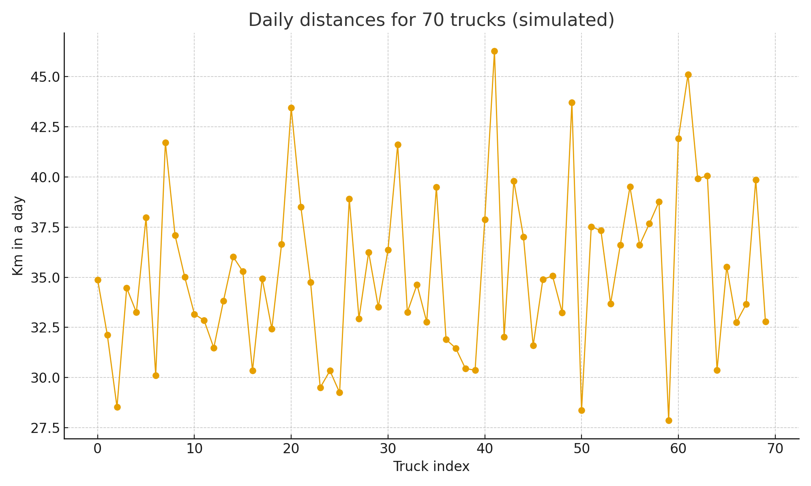

Ejercicios
Q1 · Media muestral con CLT

Q1 (CLT con parent triangular). El peso de una caja sigue una distribución triangular con parámetros \(a=380\), \(m=500\), \(b=620\) (ver figura). Se toma una muestra de \(n=64\) cajas y se calcula la media \(\bar X\). Aproxima con CLT:
- Calcula \(\mu\) y \(\sigma\) de la triangular.
- Evalúa \(P(495\le \bar X \le 505)\).
Trampa: recuerda que la DE de \(\bar X\) es \(\sigma/\sqrt{n}\) y que la triangular no es normal.
Q2 · Insesgo y varianzas
Q2 (Estimadores en competencia). Para una población con media \(\mu\) y varianza \(\sigma^2\), a partir de una muestra i.i.d. de tamaño \(n=6\), considera:
\[ \hat\mu_1=\frac{3X_1-X_2}{2},\qquad \hat\mu_2=\bar X=\frac{1}{6}\sum_{i=1}^6 X_i. \]
- Demuestra si son insesgados.
- Compara \(\operatorname{Var}(\hat\mu_1)\) vs \(\operatorname{Var}(\hat\mu_2)\).
Trampa: \(\bar X\) usa seis observaciones distintas.
Q3 · Suma de 90 recorridos
Q3 (Suma total de recorridos). La distancia diaria de un camión es \(X\sim\mathcal N(36,4^2)\). Para 90 camiones en un día, sea \(S=\sum_{i=1}^{90}X_i\).
- Calcula \(P(S>3300)\).
- Interpreta el resultado en kilómetros.
Trampa: trabajas con la distribución de \(S\), no de \(\bar X\).
Q4 · Probabilidad condicional en tabla
Q4 (Condicional). Con la función de probabilidad conjunta \(p_{X,Y}(x,y)\) dada en la tabla:
| X (semanas) | Y=4 | Y=5 | Y=6 | Y=7 |
|---|---|---|---|---|
| 1 | 0.14 | 0.11 | 0.03 | 0.05 |
| 2 | 0.09 | 0.09 | 0.04 | 0.09 |
| 3 | 0.02 | 0.04 | 0.02 | 0.06 |
| 4 | 0.02 | 0.05 | 0.05 | 0.08 |
Sabiendo que el proyecto terminó en \(Y=4\) meses, calcula \(P( X\in\{3,4\}\mid Y=4)\).
Trampa: divide dentro de la columna correcta.
Q5 · Mezcla y varianza total
Q5 (Mezcla con varianzas). El rendimiento (kg/ha) depende del régimen térmico \(R\in\{A,B,C\}\) con \(P(A)=0.55\), \(P(B)=0.35\), \(P(C)=0.10\). Condicionalmente:
- \(E[Y\mid A]=420\), \(\operatorname{Var}(Y\mid A)=80^2\)
- \(E[Y\mid B]=520\), \(\operatorname{Var}(Y\mid B)=90^2\)
- \(E[Y\mid C]=1200\), \(\operatorname{Var}(Y\mid C)=150^2\)
- Halla \(E[Y]\).
- Halla \(\operatorname{Var}(Y)\) usando la ley de la varianza total.
Q6 · Correlación con pdf conjunto

Q6 (Correlación exacta). Sea \(f_{X,Y}(x,y)=k\,x\) para \(0\le x\le y\le 3\) y 0 en otro caso. Encuentra \(k\), los momentos de primer y segundo orden y \(\rho=\operatorname{Corr}(X,Y)\).
Trampa: integra sobre la región triangular (ver figura).
Q7 · Máxima verosimilitud
Q7 (MLE con desplazamiento). Para \(x\ge 5\), \(f(x\mid\theta)=\theta\,e^{-\theta(x-5)}\) con \(\theta>0\). Dados datos i.i.d. \(x_1,\ldots,x_n\):
- Deriva el MLE de \(\theta\).
- (Extra) Si el umbral 5 fuera también desconocido \(\tau\), muestra que \(\hat\tau=\min x_i\).
Q8 · Intervalo t para la media
Q8 (IC t no trivial). Muestra de tamaño \(n=18\) de una población Normal dio \(\bar x=12.8\) y \(s=3.9\). Construye un IC del 95% para \(\mu\) y comenta el error de usar \(z\).